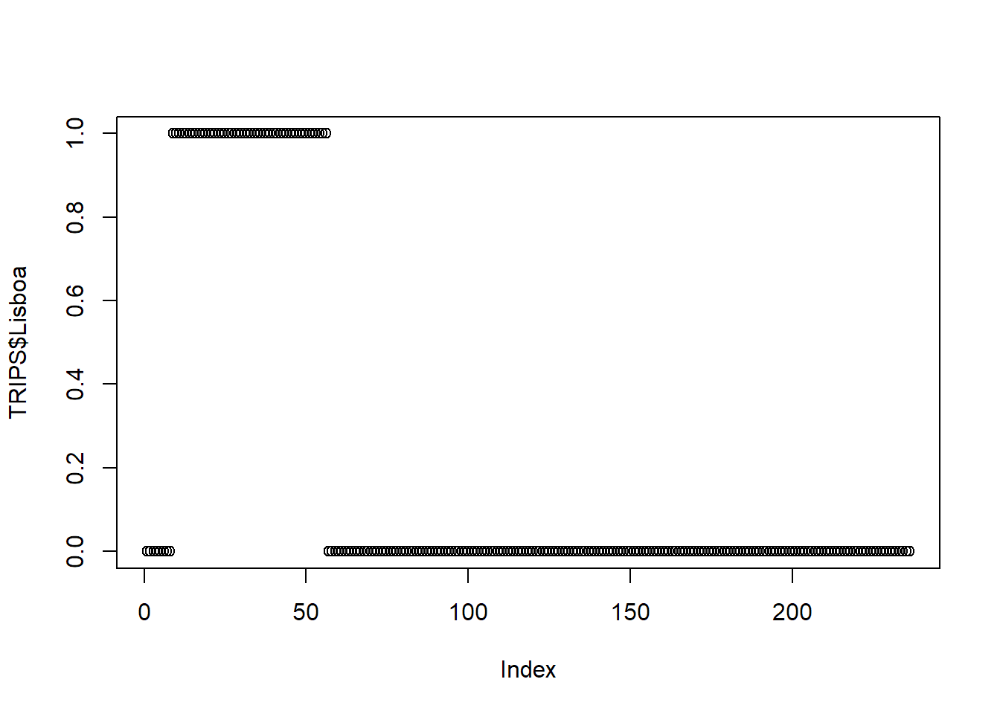

# library(tidyverse)
library(dplyr)3 Tratamento de dados
Neste capítulo, utilizaremos algumas funções muito úteis do dplyr para tratar e manipular dados.
Pode carregar o pacote dplyr diretamente ou carregar todo o universo tidy (tidyverse) que contém outros pacotes como o ggplot2 para fazer gráficos.
Iremos usar uma base de dados do IMOB (INE 2018) com as viagens entre freguesias da área metropolitana de Lisboa, por modo de transporte.
Faremos um tratamento de dados de forma simplificada, usando as mais recentes boas-práticas de utilização de linguagem R.
# ler os dados diretamente em formato R dataset
TRIPS = readRDS("data/TRIPSorigem.Rds")
Importante
Note que é muito importante compreender o R base, mesmo que as funções seguintes forneçam os mesmos resultados.
Não é necessário saber tudo! E não precisa de saber de cor. As funções seguintes são as que provavelmente utilizará na maior parte das vezes para tratar dados.
Existem várias formas de chegar à mesma solução. Aqui apresento apenas uma delas.
3.1 Selecionar variáveis
Dê uma vista de olhos ao seu conjunto de dados. Pode abrir a tabela utilizando View(), ver a informação no painel “Environment”, ou mesmo imprimir o conteúdo estruturado com glimpse()
glimpse(TRIPS)Rows: 236
Columns: 9
$ Origem <chr> "110501", "110501", "110506", "110506", "110507", "110507", "…
$ Total <dbl> 35539, 47602, 37183, 42313, 30725, 54586, 57747, 67884, 940, …
$ Walk <dbl> 11325, 3502, 12645, 1418, 9389, 2630, 20423, 3573, 623, 1738,…
$ Bike <dbl> 1309, 416, 40, 163, 1481, 168, 1406, 809, 13, 37, 3, 139, 0, …
$ Car <dbl> 21446, 37727, 22379, 37337, 19654, 44611, 33044, 52251, 192, …
$ PTransit <dbl> 1460, 5519, 2057, 3285, 201, 6963, 2477, 10534, 110, 4836, 93…
$ Other <dbl> 0, 437, 63, 106, 0, 215, 396, 717, 2, 169, 3, 824, 0, 324, 0,…
$ Interna <dbl> 0, 1, 0, 1, 0, 1, 0, 1, 0, 1, 0, 1, 0, 1, 0, 1, 0, 1, 0, 1, 0…
$ Lisboa <dbl> 0, 0, 0, 0, 0, 0, 0, 0, 1, 1, 1, 1, 1, 1, 1, 1, 1, 1, 1, 1, 1…Vamos criar um novo conjunto de dados com Origem, Walk, Bike e Total. Usamos a função select().
TRIPS_new = select(TRIPS, Origem, Walk, Bike, Total) # o primeiro argumento é a base de dadosEm R, o primeiro argumento é normalmente referente ao conjunto de dados, e os restantes são as colunas a selecionar.
Com o dplyr não √© necessário referir a data$... , podemos simplesmente escrever os nomes das variáveis (e mesmo sem o ‚Äú...‚Äù!). Isto torna o c√≥digo em R mais simples üôÇ
Com o select() podemos também remover colunas que não precisamos.
TRIPS_new = select(TRIPS_new, -Total) # deixar cair a variável Total3.1.1 Usando pipes!
Agora vamos passar a usar os pipes. Os pipes funcionam como uma regra: “Com isto, faz isto.”
Isto é útil para omitir o primeiro argumento das funções (normalmente o conjunto de dados para aplicar a função).
Com o mesmo exemplo do select(), podemos escrever como:
TRIPS_new = TRIPS |> select(Origem, Walk, Bike, Total)Duas coisas a ter em conta:
O símbolo do pipe pode ser escrito como
|>ou%>%.1 Para o escrever, pode também utilizar o atalhoctrl+shift+m.Depois de escrever
select(pode premirtabe aparecerá a lista de variáveis disponíveis desse conjunto de dados! PrimaEnterpara selecionar. Desta forma, evita erros de digitação.
3.2 Filtrar observações
Podemos filtrar observações, com base numa condição, utilizando a função filter().
TRIPS2 = TRIPS[TRIPS$Total > 25000,] # usando o r-base, não se pode esquecer a vírgula
TRIPS2 = TRIPS2 |> filter(Total > 25000) # usando o dplyr, é mais fácilÉ possível ter outras condições dentro da condição.
summary(TRIPS$Total) Min. 1st Qu. Median Mean 3rd Qu. Max.
361 5918 17474 22457 33378 112186 TRIPS3 = TRIPS |> filter(Total > median(Total)) Outras condições de filtragem:
==igual,!=diferente<menor,>maior,<=menor ou igual,>=maior ou igual&e,|ouis.na,!is.nanão é NA%in%,!%in%não está em
3.3 Criar novas variáveis
Também podemos tentar criar uma variável de percentagem de viagens em automóvel (Car) usando pipes! Para criar uma nova variável ou alterar uma existente (overwrite), podemos usar a função mutate().
TRIPS$Car_perc = TRIPS$Car/TRIPS$Total * 100 # com o r-base
TRIPS = TRIPS |> mutate(Car_perc = Car/Total * 100) # com o dplyr3.4 Alterar o tipo de dados
Os dados podem estar em diferentes formatos. Por exemplo, a variável Origem tem os códigos das freguesias como texto (character), mas podemos convertê-la numa variável numérica.
class(TRIPS$Origem)[1] "character"TRIPS = TRIPS |>
mutate(Origem_num = as.integer(Origem)) # também podemos usar as.numeric()
class(TRIPS$Origem_num)[1] "integer"Os tipos de dados mais utilizados são:
- inteiro / integer (
int) - numérico / numeric (
num) - texto/ character (
chr) - lógico / logical (
logical) - data / date (
Date) - factor (
factor)
3.4.1 Factores
Os factores são úteis para lidar com dados categóricos. Podemos converter um texto num fator usando as.factor(), e também atribuir etiquetas e níveis para dados categóricos ordinais.
Podemos alterar a variável Lisbon para um factor, e a variável Internal também.
TRIPS = TRIPS |>
mutate(Lisboa_factor = factor(Lisboa, labels = c("Não", "Sim")),
Interna_factor = factor(Interna, labels = c("Externa", "Interna")))Mas como saber qual o nível que vem primeiro? Uma forma simples é utilizar as funções table() ou unique().
unique(TRIPS$Lisboa) # isto mostra todos os valores únicos (diferentes)[1] 0 1table(TRIPS$Lisboa) # isto mostra a frequência de cada valor
0 1
188 48 table(TRIPS$Lisboa_factor)
Não Sim
188 48 O primeiro número a aparecer corresponde ao primeiro nível, e assim sucessivamente.
Podemos ver a diferença entre usar uma variável contínua (neste caso, Lisboa tem 0 e 1) e uma variável categórica (Lisboa_factor).
plot(TRIPS$Lisboa) # os valores variam entre 0 e 1
plot(TRIPS$Lisboa_factor) # os valores são categóricos e com etiquetas Sim/Não3.5 Juntar tabelas de dados
Quando temos tabelas relacionais - ou seja, com um identificador comum - é útil poder juntá-las de uma forma eficiente.
O left_join é uma função que junta duas tabelas através de uma variável comum. A primeira tabela é a que será mantida, e a segunda será acrescentada a ela. Como funciona o left_join:

left_join em que todas as linhas de x aparecem no resultado final, com mais informação junta de y. Fonte: Engel (2023).Vamos então juntar a lista de municípios à nossa tabela, através de uma outra base de dados que inclui a relação entre o código de freguesias (dicofre), o nome das freguesias e os respetivos municípios.
Municipios = readRDS("data/Municipios_nomes.Rds")head(TRIPS)# A tibble: 6 × 13
Origem Total Walk Bike Car PTransit Other Interna Lisboa Car_perc
<chr> <dbl> <dbl> <dbl> <dbl> <dbl> <dbl> <dbl> <dbl> <dbl>
1 110501 35539 11325 1309 21446 1460 0 0 0 60.3
2 110501 47602 3502 416 37727 5519 437 1 0 79.3
3 110506 37183 12645 40 22379 2057 63 0 0 60.2
4 110506 42313 1418 163 37337 3285 106 1 0 88.2
5 110507 30725 9389 1481 19654 201 0 0 0 64.0
6 110507 54586 2630 168 44611 6963 215 1 0 81.7
# ℹ 3 more variables: Origem_num <int>, Lisboa_factor <fct>,
# Interna_factor <fct>tail(Municipios) DTCC Dicofre Concelho
113 1109 110913 Mafra
114 1114 111409 Vila Franca de Xira
115 1109 110918 Mafra
116 1109 110904 Mafra
117 1502 150202 Alcochete
118 1109 110911 Mafra
Freguesia
113 Santo Isidoro
114 Vila Franca de Xira
115 União das freguesias de Azueira e Sobral da Abelheira
116 Encarnação
117 Samouco
118 MilharadoPodemos observar que as tabelas têm variáveis comuns: a Origem em TRIPS e o Dicofre em Municipios.
Uma vez que o nome da variável não é o mesmo, para juntar estas duas tabelas precisamos de especificar a variável comum em cada tabela, utilizando o argumento by.
TRIPSjoin = TRIPS |> left_join(Municipios, by = c("Origem" = "Dicofre"))Se preferir, pode alterar ou renomear uma variável para que ambas as tabelas tenham o mesmo nome. Quando ambas as tabelas têm o mesmo nome de variável, não é preciso especificar o argumento by.
Municipios = Municipios |> rename(Origem = "Dicofre") # alterar o nome da variável
TRIPSjoin = TRIPS |> left_join(Municipios) # detecta automativamente a variável comumComo é possível observar, as duas tabelas não precisam de ter o mesmo número de linhas (
nrow()). A funçãoleft_joinmantém todas as observações da primeira tabela e junta a segunda tabela a esta. Se não houver correspondência, as variáveis da segunda tabela serão preenchidas comNA.
3.6 group_by e summarize
Temos uma tabela grande com todas as freguesias da AML e os seus respectivos municípios. Queremos agora saber o número total de viagens com origem em cada município.
Para facilitar, vamos manter apenas as variáveis de que precisamos para chegar ao resultado.
TRIPSredux = TRIPSjoin |> select(Origem, Concelho, Interna, Car, Total)
head(TRIPSredux)# A tibble: 6 × 5
Origem Concelho Interna Car Total
<chr> <chr> <dbl> <dbl> <dbl>
1 110501 Cascais 0 21446 35539
2 110501 Cascais 1 37727 47602
3 110506 Cascais 0 22379 37183
4 110506 Cascais 1 37337 42313
5 110507 Cascais 0 19654 30725
6 110507 Cascais 1 44611 54586Podemos agrupar esta tabela pela variável Concelho e sumarizar (summarize) o número de viagens com origem em cada município.
TRIPSsum = TRIPSredux |>
group_by(Concelho) |> # não irá notar nenhuma alteração na tabela
summarize(Total = sum(Total))
head(TRIPSsum)# A tibble: 6 × 2
Concelho Total
<chr> <dbl>
1 Alcochete 36789
2 Almada 289834
3 Amadora 344552
4 Barreiro 133658
5 Cascais 373579
6 Lisboa 1365111Somámos o número total de viagens em cada município.
Se quisermos agrupar por mais do que uma variável, podemos adicionar mais variáveis ao group_by().
TRIPSsum2 = TRIPSredux |>
group_by(Concelho, Interna) |>
summarize(Total = sum(Total),
Car = sum(Car))
head(TRIPSsum2)# A tibble: 6 × 4
# Groups: Concelho [3]
Concelho Interna Total Car
<chr> <dbl> <dbl> <dbl>
1 Alcochete 0 16954 9839
2 Alcochete 1 19835 15632
3 Almada 0 105841 49012
4 Almada 1 183993 125091
5 Amadora 0 117727 33818
6 Amadora 1 226825 142386Somámos o número total de viagens e viagens em automóvel para cada município, discriminadas por deslocações internas e externas.
É uma boa prática utilizar a função ungroup() após a função group_by(). Isso removerá o agrupamento. Se não o fizer, o agrupamento será mantido e poderá obter resultados inesperados na próxima vez que utilizar esse conjunto de dados.
3.7 Organizar os dados
Podemos ordenar (sort) um conjunto de dados por uma ou mais variáveis.
Por exemplo, arrange() por Total de viagens, na ordem ascendente ou descendente.
TRIPS2 = TRIPSsum2 |> arrange(Total)
TRIPS2 = TRIPSsum2 |> arrange(-Total) # descendente
TRIPS2 = TRIPSsum2 |> arrange(Concelho) # alfabética
TRIPS4 = TRIPS |> arrange(Lisboa_factor, Total) # mais de uma variávelIsto não é o mesmo que abrir a tabela de visualização e clicar nas setas das variáveis. Quando se faz isso, a ordem não é guardada no conjunto de dados. Se quiser guardar a ordem, deverá usar a função arrange().
3.8 All together now!
Esta é a magia dos pipes. O pipe pega no último resultado e aplica-lhe a função seguinte. “Com isto, faz isto.”. Podemos encadear as funções que quisermos.
TRIPS_pipes = TRIPS |>
select(Origem, Interna, Car, Total) |>
mutate(Dicofre = Origem) |>
mutate(Interna_factor = factor(Interna, labels = c("Externa", "Interna"))) |>
filter(Interna_factor == "Interna")|>
left_join(Municipios) |>
group_by(Concelho) |>
summarize(Total = sum(Total),
Car = sum(Car),
Car_perc = Car/Total * 100) |>
ungroup() |>
arrange(desc(Car_perc))Com este código, teremos uma tabela com o número total de viagens intramunicipais, por município, com os seus nomes em vez de códigos, ordenados pela percentagem de viagens em automóvel.
TRIPS_pipes# A tibble: 18 × 4
Concelho Total Car Car_perc
<chr> <dbl> <dbl> <dbl>
1 Montijo 42042 36089 85.8
2 Mafra 60221 51233 85.1
3 Setúbal 110348 90837 82.3
4 Cascais 212385 171926 81.0
5 Sesimbra 39541 31238 79.0
6 Oeiras 203313 160554 79.0
7 Alcochete 19835 15632 78.8
8 Palmela 65825 49403 75.1
9 Sintra 322539 237954 73.8
10 Vila Franca de Xira 97596 71482 73.2
11 Loures 213336 155238 72.8
12 Moita 47472 33754 71.1
13 Barreiro 80696 56003 69.4
14 Seixal 145532 99532 68.4
15 Almada 183993 125091 68.0
16 Odivelas 155468 102812 66.1
17 Amadora 226825 142386 62.8
18 Lisboa 1085032 585823 54.03.9 Outras funções do dplyr
Pode explorar outras funções e variações do dplyr para manipulação de dados na dplyr cheatsheet:
Take a particular attention to pivot_wider and pivot_longer (tidyr package) to transform OD matrices in wide and long formats.
Tome especial atenção a pivot_wider e pivot_longer (pacote tidyr ) para transformar matrizes OD em formatos largos (wide) ou longos (long).
| Origens | Destinos | Viagens |
|---|---|---|
| A | B | 20 |
| A | C | 45 |
| B | A | 10 |
| C | C | 5 |
| C | A | 30 |
| Viagens | A | B | C |
|---|---|---|---|
| A | NA | 20 | 45 |
| B | 10 | NA | NA |
| C | 30 | NA | 5 |
Pode alterar isto em RStudio > Tools > Global Options > Code.↩︎